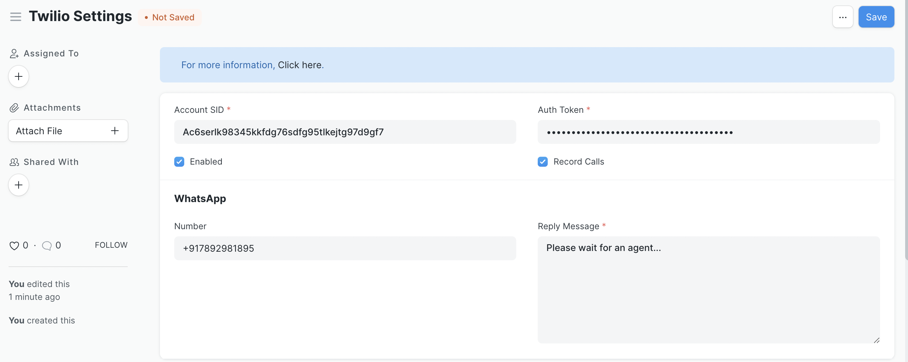

Twilio Integration With Frappe Framework
Frappe1 is a low code framework for rapidly developing web applications. Twilio2 is a SAAS platform for SMS, Video etc with APIs.
In this post, lets see how to setup Twilio Integration with Frappe.
Sending SMS
Frappe has inbuilt SMS manager3 where users can confgiure SMS gateway and send SMS to mobiles directly.
To send out messages/SMS with Twilio, we just need to configure Twilio API keys in SMS settings.
First, create an account in Twilio and collect the following information from the account.
-
Twilio account SID
-
Gateway URL
-
Auth Token
-
"From" Phone number
These details need to be added to SMS settings in the following format.

For authorization parameter, we need to enter base64 encoded value of account_sid:auth_token.
Once these values are set, we can go to SMS Center and send out dummy messages to ensure all settings are configured properly.
Twilio App
If we want to manage incoming/outgoing voice calls or send messages via WhatsApp, we need to install twilio-integration4 app. We can install the app on our site by running the following commands.
bench get-app https://github.com/frappe/twilio-integration.git bench --site example.com install-app twilio_integration
Once the app is installed, we can go to Twilio Settings and configure the keys as shown below.

After that we can setup Voice Call Settings to manage incoming/outgoing calls.
To send messages via Whatsapp, we can set the channel as Whatsapp in Notification doctype.

This is how we can send SMS, Whatsapp messages & manage calls via Twilio using Frappe Framework.